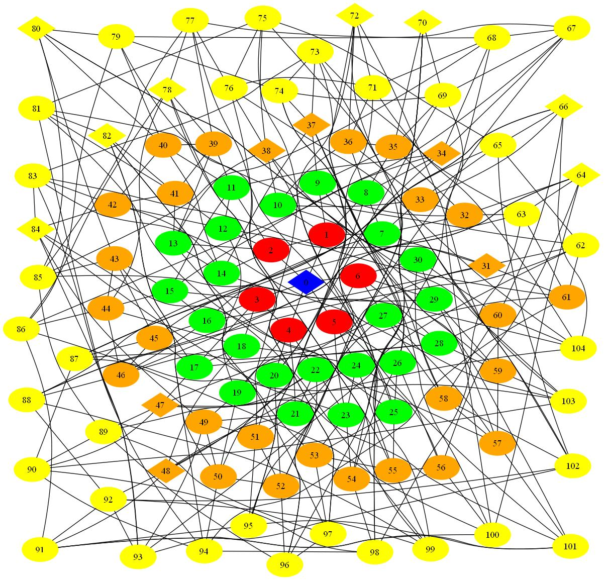
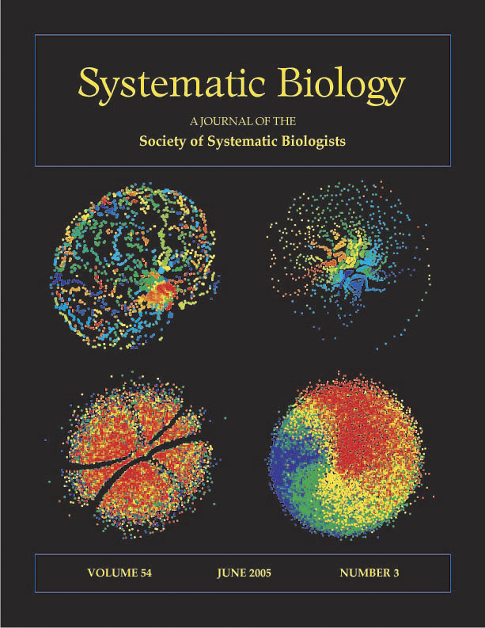

My research interests lie in computational biology, random structures and algorithms, languages, and logic. Most recently, I have been working on phylogenetic tree reconstruction, visualizing trees, and rotation distance of ordered trees.
 |
| Students, 2018 |
|  |
| Treespace, 2010 |
|  |
| Sys Bio, 2005 |
Here are some recent preprints (see journal/publisher for final versions):
| (* indicates undergraduate researcher) | |
| Magnus Bordewich, Simone Linz, Megan Owen, Katherine St. John, Charles Semple, and Kristina Wicke,
On the Maximum Agreement Subtree Conjecture for Balanced Trees,
Submitted for publication, May 2020. |
|
| Melanie Hopkins and Katherine St. John,
Incorporating Hierarchical Characters into Phylogenetic Analysis,
Systematic Biology, In Press (On-line publication: 9 February 2021). |
|
| Nathan Davidov*,
Amanda Hernandez*,
Justin Jian*,
Patrick McKenna*,
Karen Medlin*,
Roadra Mojumder*,
Megan Owen,
Andrew Quijano*,
Amanda Rodriguez*,
Katherine St. John,
Katherine Thai*,
Meliza Uraga*,
Maximum Covering Subtrees for Phylogenetic Networks,
IEEE/ACM Transactions on Computational Biology and Bioinformatics, In Press (On-line publication: 26 November 2020). (Results from the Treespace Research Experience for Undergraduates 2017-2018 cohort.) |
|
| Maria Anaya*,
Olga Anipchenko-Ulaj*,
Aisha Ashfaq*,
Joyce Chiu*,
Mahedi Kaiser*,
Max Shoji Ohsawa*,
Megan Owen,
Ella Pavlechko*,
Katherine St. John,
Shivam Suleria*,
Keith Thompson*,
Corrine Yap*,
Properties for Splits in the Frechet Mean in Billera-Holmes-Vogtmann Treespace,
Advances in Applied Mathematics, 120: 102072 (On-line publication: 22 June 2020). (Results from the Treespace Research Experience for Undergraduates 2015-2016 cohort.) |
|
| Julia Matsieva and Katherine St. John, Most Parsimonious Likelihood Exhibits Multiple Optima for Compatible Characters, Bulletin of Mathematical Biology, 82:10, 2020. | |
| Melanie Hopkins and Katherine St. John, A new family of dissimilarity metrics for discrete character matrices that include inapplicable characters and its importance for disparity studies, Proceedings of the Royal Academy, Series B, 285(1892), 2018. | |
| Katherine St. John, Review Paper: The Shape of Phylogenetic Treespace, invited submission to MCEB 2015 special issue of Systematic Biology, 66(1):e83- e94, 2017. | |
| Ellen Urheim*, Eric Ford, and Katherine St. John, Characterizing Local Optima for Maximum Parsimony, Bulletin of Mathematical Biology, 78(5): 1058-1075, 2016. | |
| Maria Anaya*,
Olga Anipchenko-Ulaj*,
Aisha Ashfaq*,
Joyce Chiu*,
Mahedi Kaiser*,
Max Shoji Ohsawa*,
Megan Owen,
Ella Pavlechko*,
Katherine St. John,
Shivam Suleria*,
Keith Thompson*,
Corrine Yap*,
On Determining if Tree-based Networks Contain Fixed Trees,
Bulletin of Mathematical Biology, 78:961-969, April 2016. (Results from the Treespace Research Experience for Undergraduates 2015-2016 cohort.) |
|
| Daniel Irving Bernstein, Lam Si Tung
Ho, Colby Long, Mike Steel, Katherine St. John, and Seth Sullivant,
Bounds on the Expected Size of the Maximum Agreement Subtree,
SIAM Journal of Discrete Mathematics, 29(4). (Published on-line November 2015). (Results from the Random Trees Working Group, NSF CBMS Conference, July 2014.) |
|
| Eric Ford, Katherine St. John, and Ward Wheeler, Towards Improving Searches for Optimal Phylogenies, Systematic Biology, 64 (1): 56-65, 2015. (First published online August 26, 2014.) | |
| Kevaughn Gordon*, Eric Ford, and Katherine St. John,
Hamiltonian Walks of Phylogenetic Treespaces,
IEEE/ACM Transactions on Computational Biology and Bioinformatics,
10(4):1076-1079, 2013. (Solves a $100 prize problem from the New Zealand Phylogenetics Meeting Penny Ante List.) |
|
| Simone Linz, Katherine St. John, and Charles Semple, Optimizing tree and character compatibility across several phylogenetic trees, Theoretical Computer Science, 513:129-136, 2013. | |
| Simone Linz, Katherine St. John, and Charles Semple,
Counting Trees in a Phylogenetic Network is #P-Complete,
SIAM Journal of Computing, 42(4):1768-1776, 2013.
(Solves Nahkleh's enumerating trees challenge from the Isaac Newton Institute Phylogenetics Problems and Challenges List.) |
|
| Alan Joseph Caceres*, Juan Castillo*, Jinnie Lee, and Katherine St. John,
Walks on SPR Neighborhoods,
IEEE/ACM Transactions on Computational Biology and Bioinformatics,
10(1):236-239, 2013.
(Solves a $100 prize problem from the New Zealand Phylogenetics Meeting Penny Ante List.) |
|
| Maria Luisa Bonet, Simone Linz, and Katherine St. John,
Complexity of Finding Multiple Solutions to Betweenness and Quartet Compatibility,
IEEE/ACM Transactions on Computational Biology and Bioinformatics,
9(11):273-285, 2012.
(Solves Steel's $100 Quartet Challenge.) |
|
| Alan Joseph Caceres*, Samantha Daley*, John DeJesus*, Michael Hintze*, Diquan Moore*, and Katherine St. John, Walks in Phylogenetic Treespace, Information Processing Letters, 111:600-604, 2011. | |
| Sean Cleary and Katherine St. John, Linear-time Approximation Algorithm for Rotation Distance, Journal of Graph Algorithms and Applications, 14(2):385-390, 2010. | |
| Maria Luisa Bonet and Katherine St. John, On the Complexity of uSPR Distance, IEEE Transactions on Computational Biology and Bioinformatics, 7(3):572-576, 2010. | |
| Maria Luisa Bonet and Katherine St. John,
Efficiently Calculating Evolutionary Tree Measures Using SAT,
Twelfth International Conference on
Theory and Applications of Satisfiability Testing (SAT 09). (Related SAT instances submitted to the SAT Competition.) |
|
| Sean Cleary and Katherine St. John, Rotation Distance is Fixed Parameter Tractable, Information Processing Letters, 109:918-922, 2009. | |
| Balaji Venkatachalam, Jim Apple, Katherine St. John, and Dan Gusfield,
Untangling Tanglegrams: Comparing Trees by their Drawings,
Proceedings of the Fifth
International Symposium on Bioinformatics Research and Applications
(ISBRA 09), LCNS 5542/2009:88-99, 2009. (An extended version appeared in the special issue of IEEE Transactions on Computational Biology and Bioinformatics for ISBRA: October-December 2010 7(4):588-597.) |
|
| Sean Cleary and Katherine St. John, Analyses of Haplotype Inference Algorithms, Far East Journal of Mathematical Sciences, 28(2):257-495, 2008. | |
| Magnus Bordewich, Simone Linz, Katherine St. John, and Charles Semple, A Reduction Algorithm for Computing the Hybridization Number of Two Trees, Evolutionary Bioinformatics, 3:86-98, 2007. | |
| Nina Amenta, Matthew Godwin, Nicolay Postarnakevich*, and Katherine St. John, Approximating Geodesic Tree Distance, Information Processing Letters, 107:61-65, 2007. | |
| Maria Luisa Bonet, Katherine St. John, Ruchi Mahindru*, and Nina Amenta, Approximating Subtree Distances Between Phylogenies, Journal of Computational Biology, 13(8):1419-1434, 2006. | |
|
Joel H. Spencer and Katherine St. John,
The Complexity of Random Ordered Structures (extended abstract),
Electronic Notes in Theoretical Computer Science
(12th Workshop on Logic, Language, Information, and Computation (WoLLIC 2005)),
143:197-206, 2006. (A full version of the paper appeared in Annals of Pure and Applied Logic, 152(1-3):174-179, 2008. ) |
|
| David Wiley, Nina Amenta, Daniel A. Alcantara, Deboshmita Ghosh, Yong J. Kil, F. James Rohlf, Eric Delson, William Harcourt-Smith, Katherine St. John, and Hamann Bernd, "Evolutionary Morphing", Proceedings of the IEEE Conference on Visualization (Vis05). (Project website) | |
| Luay K. Nakhleh, Tandy Warnow, C. Randal Linder, and Katherine St. John, Reconstructing Reticulate Evolution in Species--Theory and Practice, Journal of Computational Biology, 12(6-7):796-811, 2005. | |
| David Hillis, Tracy Heath, and Katherine St. John, Analysis and Visualization of Tree Space, Systematic Biology (cover article), 54(3):471-82, June 2005. | |
| James Slack, Kristian Hildebrand*, Tamara Munzner, and Katherine St. John, Fluid Navigation For Large-Scale Sequence Comparison, Proceedings of the German Conference on Bioinformatics 2004 (GCB04), p 37-42, 2004. (Paper website) | |
| Nina Amenta, Frederick Clark*, and Katherine St. John,
A Linear-time Majority Tree,
Lecture Notes in Computer Science, (Proceedings of
WABI03: Workshop on Algorithms in Biology, Budapest, Hungary), 2812:
216-227, 2003. (A two page abstract was also accepted and presented to the European Conference on Computational Biology (ECCB 03), Paris, France) |
|
| Katherine St. John, Bernard Moret, Lisa Vawter, and Tandy Warnow,
Performance Study of Phylogenetic Methods: (Unweighted)
Quartet Methods and Neighbor-Joining,
Journal of Algorithms (Invited submission to "Best of SODA `01" issue),
48(1):173-193.
(Extended abstract in Proceedings of the Twelfth ACM-SIAM Symposium on Discrete Algorithms (SODA01), p 196-205.) |
|
| Luay Nakhleh, Bernard Moret, Usman Roshan, Katherine St. John, Jerry Sun*, and Tandy Warnow, The Accuracy of Phylogenetic Methods for Large Datasets, Proceedings of the Pacific Symposium on Biocomputing (PSB 02), 7:211-222, January 2002. | |
| Luay Nakhleh, Usman Roshan, Katherine St. John, Jerry Sun*, and Tandy Warnow, The Performance of Phylogenetic Methods on Trees of Bounded Diameter, Lecture Notes in Computer Science (Proceedings of the Algorithms in Bioinformatics: First International Workshop on Algorithms in Bioinformatics (WABI 2001)), 2149:214-226. | |
| Luay Nakhleh, Usman Roshan, Katherine St. John, Jerry Sun*, and Tandy Warnow, Designing Fast Converging Phylogenetic Methods, Bioinformatics (Ninth International Conference on Intelligent Systems for Molecular Biology ((ISMB 2001)), 17(90001):S190-S198, 2001. July 21-25, 2001). | |
| Joel Spencer and Katherine St. John, The Tenacity of Zero-One Laws, the Fraenkel special issue of Electronic Journal of Combinatorics, 8(2):R17, 2001. | |
| Tandy Warnow, Bernard Moret, and Katherine St. John, Absolute Convergence: True Trees From Short Sequences, Proceedings of the Twelfth ACM-SIAM Symposium on Discrete Algortihms (SODA01), p 186-195. | |
| Joel Spencer and Katherine St. John, Random Unary Predicates: Almost Sure Theories and Countable Models, Random Structures & Algorithms, 13(#3/4):229--248, 1998. | |
| Joel Spencer and Katherine St. John, Random Sparse Bit Strings at the Threshold of Adjacency 15th Symposium on the Theorectical Aspects of Computer Science (STACS 98), Lecture Notes in Computer Science 1373, Springer 1998. | |
| Katherine St. John, Limit Probabilities for Random Sparse Bit Strings, Electronic Journal of Combinatorics, 4(1):R23, 1997. |